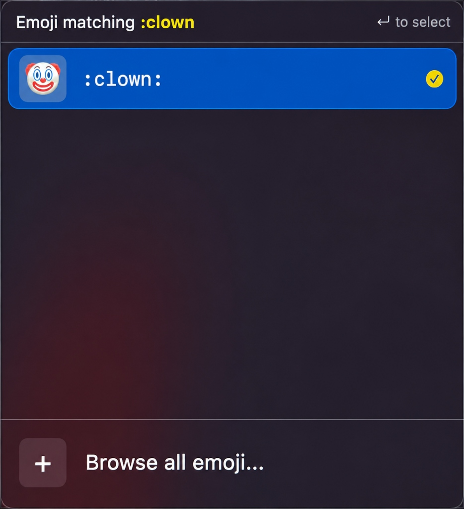
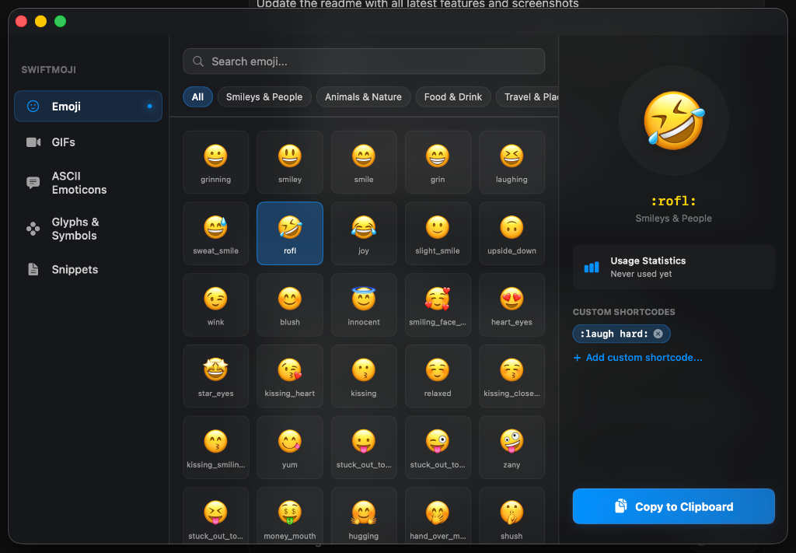
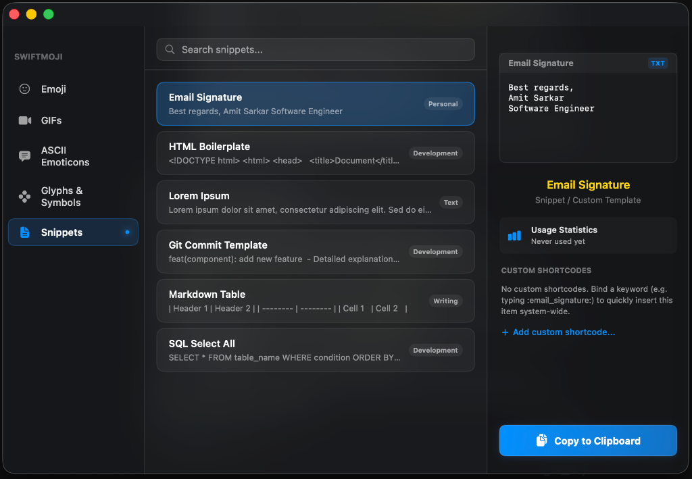
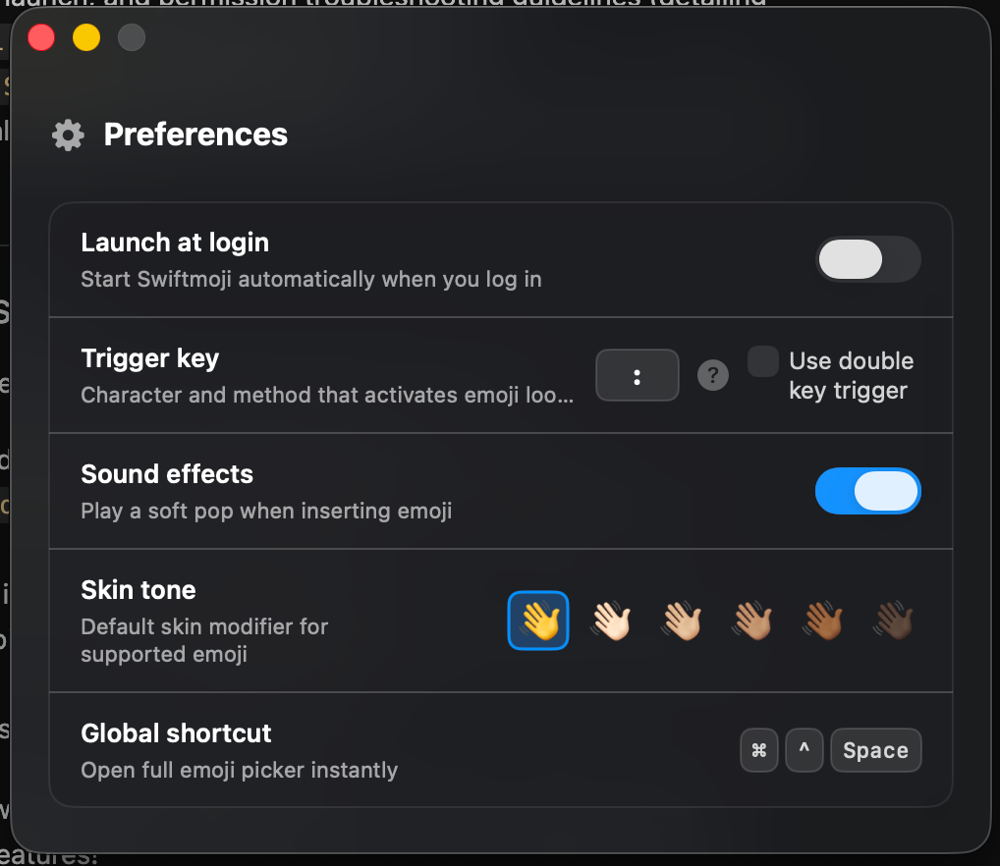

Type double backslash \\thumbsup or custom snippet tags in Notes, VS Code, Slack, Chrome, or Mail.
Instant glassmorphic autocomplete floats at your caret without stealing keyboard focus.
Experience the exact feel of Swiftmoji! Type double backslash \\ (or :) followed by an emoji name, or click any chip below to watch the Caret HUD float and autocomplete.
\\keyword\ or colon automatically converts in-place
Explore actual screenshots of the native macOS app running on Apple Silicon. From the floating caret HUD to the 3-column split browser and custom snippet engine.

Monitors keystroke events globally and floats right at your text cursor. Configured as an NSPanel at .statusBar level so it never steals keyboard focus from your active document or editor.
Utilizes Quartz CGEventTap at the WindowServer session tier to calculate screen bounds with Accessibility API and inject synthetic backspaces in nanoseconds.



Designed specifically for macOS power users who value distraction-free writing, system-wide consistency, and zero overhead.
Swiftmoji intercepts keystrokes via low-level macOS WindowServer Event Taps. When you type your trigger, backspaces are injected seamlessly without stalling your active typing stream.
Unlike web wrappers, the floating HUD is a native NSPanel configured at .statusBar level. It renders over any document without stealing focus or interrupting your flow.
Bind personalized keywords to recurring text, signatures, or multi-line boilerplate. Type :shrug: to output ¯\_(ツ)_/¯ or :sig: for your company signoff.
Tired of the sluggish default macOS emoji picker? Swiftmoji can intercept ⌃⌘Space globally and summon its 3-column split view browser instantly.
Swiftmoji makes zero outbound network requests. No telemetry, no tracking, and no external servers. Your keystrokes never leave your Mac.
Packaged with codesign -s - --deep so macOS remembers Accessibility privileges across updates and restarts without annoying security re-prompts.
No complex dependencies or package managers. Simply drag, grant Accessibility, and start typing.
Open Swiftmoji.dmg and drag the application icon into your Mac's /Applications folder.
On first launch, grant permission in System Settings > Privacy & Security > Accessibility so Swiftmoji can listen for shortcode triggers.
Open any text field (Chrome, Notes, Slack, Xcode) and type \\th. Select your emoji with arrows or hit Enter!
Get the latest signed release directly. Fully optimized for Apple Silicon Macs running macOS 11.0 Big Sur, Monterey, Ventura, Sonoma, or Sequoia.
Standard macOS drag-and-drop installer with quick-start instructions.
Direct application bundle packaged with Mac extended attributes preserved.
Never. Swiftmoji operates 100% locally on your Mac. It contains zero network libraries, no analytics, and makes no outbound network connections whatsoever. All shortcode conversions and custom mappings happen entirely in-memory on your device.
macOS requires Accessibility permissions for any application that listens for global keystrokes (CGEventTap) across other apps, determines the active text caret position, and simulates backspaces to replace your shortcode with the intended emoji or snippet.
Yes! Inside the 3-Column Split Browser, you can bind any personalized trigger word to emojis, ASCII faces, special Unicode glyphs, or multi-line text snippets (such as email signatures and code templates).
Simply press the Escape key or press Space. The panel dismisses immediately and leaves your text unchanged.
Swiftmoji is built natively for Apple Silicon (M1, M2, M3, M4, and M5 chips) running macOS 11.0 (Big Sur) and later, with full support for macOS Sonoma and macOS Sequoia.